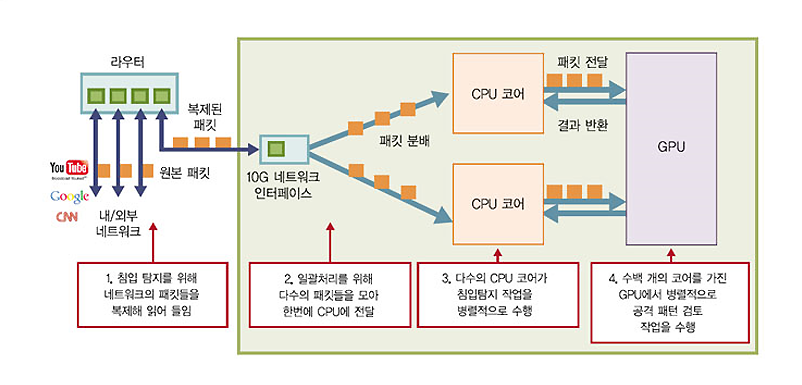
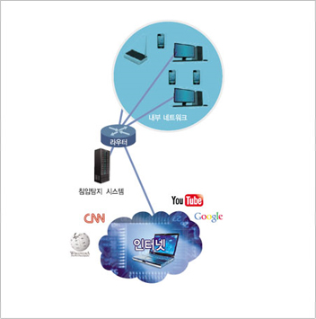

주제별 연구성과
주제별 연구성과
KAIST RESEARCH ACHIEVEMENTS
네트워크 침입을 실시간으로
감시하고 차단할 수 있다.
전기및전자공학부 박경수 · 이융
요약
일상의 모든 전자기기들이 네트워크에 연결되어 운영되는 유비쿼터스 사회가 보편화됨에 따라 이를 악용하는 네트워크 공격이 크게 증가하고, 이러한 공격으로 인한 피해가 심각한 인명 및 재산 피해로까지 이어질 수 있게 된다. 본 연 구는 저렴하고 효율적인 소프트웨어 기반 네트워크 침입탐지 시스템을 개발하여 대용량 네트워크 환경에서의 네트워크 침입행위를 실시간으로 감지하고 차단하는 보안 환경 구축에 초점을 맞추고 있다.
연구내용
이 시스템을 활용하면 수십 Gbps 수준의 초고속 네트워크로 접속되는 기업, 정부, 교육기관 등의 네트워크는 물론 클라우드 서버팜이나 IP로 구동되는 LTE 백본망 등에 대한 공격을 고유연성을 지닌 저가의 소프트웨어장비로 대비할 수 있 을 것으로 전망된다. 또한 현재 전 세계적으로 가장 널리 사용되고 있는 공개 소프트웨어 기반 시스템인 Snort의 탐지규칙을 그대로 활용할 수 있도록 제작되어 상용화 가능성이 매우 높으며, 현재 국가보안기술연구소 주도로 기술이전을 논의 중이다.
네트워크의 안정성을 해치는 악의적인 공격은 현대 사회에 큰 위협이 되고 있다. 스팸메일, 온라인 피싱, DDoS공격등은 이젠 특정 해커들의 전유물에서 벗어나 초보자도 쉽게 쓸 수 있는 형태의 프로그램으로 만들어져 상품으로 팔려 불법적인 이득을 취하기 위한 수단으로 널리 활용되고 있으며, 국가 간의 사이버 공격도 갈수록 심화되고 있어 재산상의 피해는 물론 심각한 사회혼란을 야기하고 있다. 이에 효과적으로 대응하기 위해 기존보다 빠르고 저렴한 네트워크 침입탐지 시스템의 개발과 기술 국산화가 필수적이다.
기존 네트워크 침입탐지 시스템은 범용 하드웨어 상에서 소프트웨어적으로 구현되거나 특수한 전용 하드웨어를 이용하여 제작하는 방식으로 연구되었다. 기존 소프트웨어 기반 네트워크 침입탐지 시스템은 개발 및 유지 보수가 용이하다는 장점이 있으나, 수백 Mbps 또는 수 Gbps 수준에 최적화되어 수십 Gbps의 대역폭을 지니는 오늘날의 고속 네트워크 환경을 관제하기에 적합하지 않다. ASIC이나 FPGA와 같은 특수 하드웨어를 사용해 구현된 시스템의 경우 일반적으로 높은 성능을 보이지만 수억 원에 달하는 설치 및 운영비용으로 보안 시스템의 구축과 확산에 어려움이 있다.
본 연구에서는 네트워크 침입탐지 시스템의 가격을 낮추면서 높은 유연성과 확장성 및 처리율을 보장하기 위하여 범용 하드웨어 상에서 소프트웨어적으로 구현된 시스템 아키텍처와 일괄처리 및 병렬처리 기법을 제안하였다. 또한 이를 약 700만원 정도의 상용 서버에서 구현하고 다양한 환경에서 성능을 검토하여 세계 최고 수준의 처리율을 검증하였다. 뿐만 아니라 전 세계적으로 가장 널리 사용되고 있는 소프트웨어 기반 네트워크 침입탐지 시스템인 스노트(Snort)와의 높은 호환성을 지원하여 연구적 가치와 함께 상용화 가능성도 매우 높아 그 파급효과가 매우 클 것으로 예상된다.
 그림 1. 네트워크 침입탐지시스템 “카거스(Kargus)”
네트워크상에서 데이터는 패킷(packet)이라 불리는 작은 조각으로 쪼개어져 전송된다. 이러한 일련의 데이터 전송 혹은 네트워크 통신을 구성하는 연속된 패킷들의 흐름을 플로(flow)라고 한다. 네트워크 침입탐지 시스템은 이러한 패킷들과 플로들이 특정한 침입 패턴을 지니고 있는지 확인하는 작업을 수행한다. 침입 패턴은 문자열 및 정규표현식과 이를 수식하는 보조 옵션들로 기술되는데, 기존 침입 사례 및 시스템 취약점 분석 등을 통해 제작되어 데이터베이스화 되어있고 필요에 따라 자유롭게 추가하거나 수정할 수 있다. 네트워크 침입탐지를 위해 네트워크 스위치나 라우터에서는 드나드는 패킷들을 복제해 침입탐지 시스템으로 전달하는 작업을 수행한다. 네트워크 침입탐지 시스템의 네트워크 인터페이스에서는 이러한 패킷들을 읽어 들여 CPU로 전달한다.
이때 효율적인 병렬처리를 위해 다수의 CPU 코어에 고르게 패킷들을 분배하는 한편 같은 플로에 속하는 패킷들을 동일한 코어에 전달하기 위해 Receive-Side Scaling(RSS)이라 불리는 기법을 사용한다. 그리고 패킷들을 하나씩 CPU 코어에 전달하지 않고 수백 개의 패킷들을 한 번에 전달하도록 하는 일괄처리 기법을 적용하였다. 각각의 CPU 코어에서는 다수의 패킷들을 한 번에 읽어 들여 침입 여부를 판단하는데, 이때 최대한 일괄처리가 가능하도록 시스템을 설계하여 연산 효율을 높였다. 또한 높은 연산비용이 소모되는 문자열 및 정규표현식 검토 연산을 그래픽 연산에 주로 사용되는 GPU로 이양하여 수백 개의 GPU 코어를 이용한 초병렬적 연산이 가능하도록 하였으며, CPU와 GPU간의 통신 효율을 높이기 위해 한 번에 수천 개의 패킷들을 일괄적으로 처리하도록 하였다. 이외에도 전력 효율을 높이기 위해 네트워크 인터페이스로부터 유입되는 패킷의 속도에 따라 선택적으로 GPU를 사용하도록 하는 로드밸런싱 알고리즘을 개발하여 적용하였다. 그 결과 해커의 공격이 없는 일반적인 상황에서는 33 Gbps, 100% 공격 패킷만 들어오는 경우에도 기존 1~2 Gbps수준이던 성능을 약 10 Gbps로 크게 향상시키는데 성공하였다.

연구비 지원
본 연구는 국가보안기술연구소와의 공동연구로 진행되었으며, 한국연구재단의 지원을 받았음
연구실적
- 2012년 10월에 열린 보안 분야 세계 최고 권위의 국제 학회인 ACM CCS에 한국 논문으로는 19년 만에 최초로 채택되어 발표되었음
- 2012년 10월 특허출원 완료
- 연합뉴스, 전자신문 외 16개 언론 매체에 보도됨